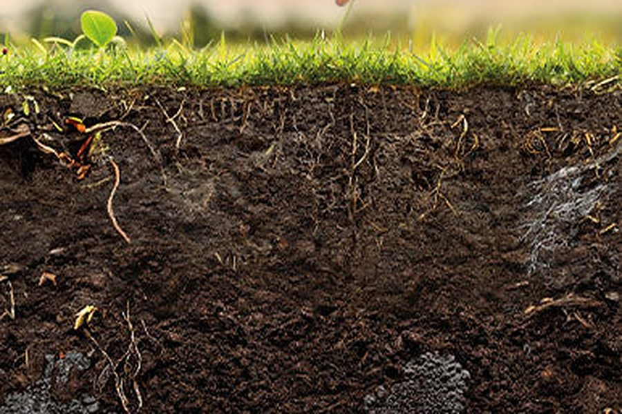
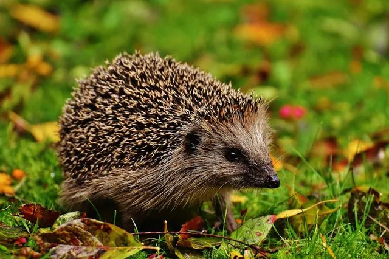
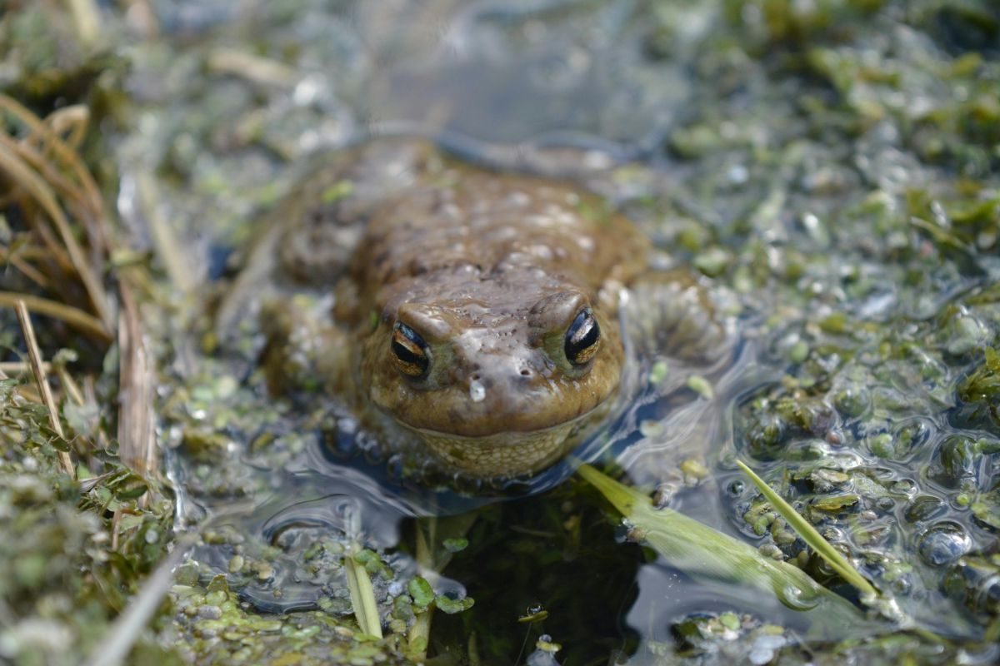
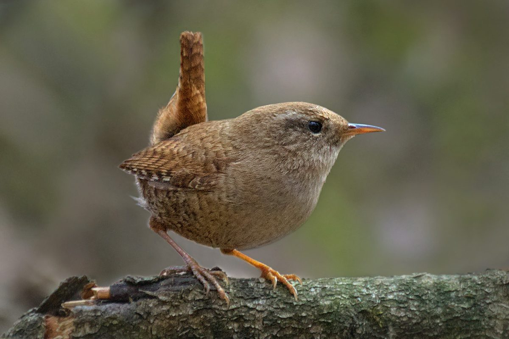

Tuinonderhoud
Ik houd je tuin het hele jaar mooi en in balans door te maaien, te wieden en je borders te verzorgen.
Ik verzorg tuinen in Soest en omgeving, met aandacht voor een gezonde bodem, inheemse planten en een aanpak die past bij jouw tuin.
Van dagelijks onderhoud tot het meenemen van snoeisel en grond: ik regel het, zodat jij van je tuin kunt genieten.
Ik houd je tuin het hele jaar mooi en in balans door te maaien, te wieden en je borders te verzorgen.
Ik snoei struiken, heesters en bomen op het juiste moment en op de juiste manier, zodat ze gezond blijven en mooi doorgroeien.
Ik maak borders met vaste planten en inheemse struiken voor meer biodiversiteit en een levendige tuin.
Snoeisel, blad en grond zijn waardevolle grondstoffen. Ik neem ze mee in mijn eigen kipperwagen, zodat jij er geen werk aan hebt en ze waar mogelijk weer een nuttige plek krijgen.
Ik werk samen met de bodem van deze omgeving en kies planten die passen bij de natuurlijke omgeving en jouw grondsoort.
Ik werk met compost, organisch materiaal en natuurvriendelijke methoden, met zo min mogelijk verspilling.
Samen kijken we naar wat jouw tuin nodig heeft en wat jij belangrijk vindt, in jouw tempo.
Een gezonde tuin begint onder de grond. Daarna volgen de dieren vanzelf, als ze ruimte krijgen.

Borders met inheemse planten, een laag mulch en zo min mogelijk omspitten. Zo krijgen wormen, schimmels en insecten de kans om je bodem gezond te maken.

Een opening van ongeveer 13 bij 13 cm in de schutting en een takkenril of bladhoop als schuilplek: zo vindt de egel zijn weg door de buurt.

Een vijver of poel met een ondiepe oever trekt libellen, kikkers, padden en vogels aan en is een drinkplek voor alles wat er langskomt.

Struiken met bessen, nestkasten en een tuin vol insecten brengen zangvogels terug, zoals de winterkoning.
Helder en praktisch, van eerste contact tot onderhoud.
Je vertelt wat je tuin nodig heeft en wat je wilt bereiken.
Ik bekijk de tuin, de bodem, de planten en de mogelijkheden.
We stemmen een passende aanpak af op jouw wensen.
Ik verzorg de tuin met aandacht voor haar gezondheid.
Woon je in Soest of omgeving? Vertel me wat je in je tuin wilt verbeteren, dan kijken we samen naar de mogelijkheden.